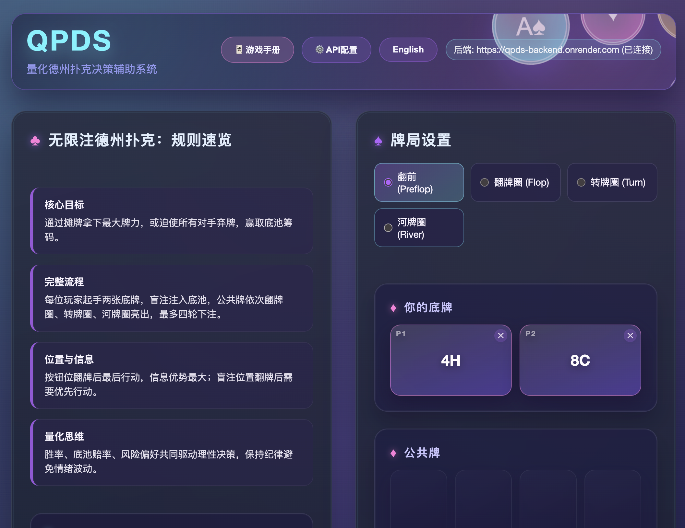

Education 教育经历
|
|
Peking University, School of Physics
Sep. 2024 - Jun. 2028 (Expected)
B.S. in Physics
- Selected coursework: Theoretical Mechanics, Modern Physics, Optics,
Mathematical Methods in Physics I & II, Probability and Statistics,
Electromagnetism, and Data Structures and Algorithms.
|
Research 科研经历
|
|
My current interests include topological quantum materials, Hall transport,
first-principles calculations, and machine learning for materials research.
My undergraduate project is currently in the literature-review and
methodology-preparation stage.
|
|
Machine-Learning-Assisted Screening of Hall Responses in Topological Quantum Materials
Apr. 2026 - Present
Independent Undergraduate Research Project · Advisor: Prof. Ji Feng, Peking University
- Investigating how materials databases and machine-learning methods can help screen candidate topological quantum materials for quantum anomalous Hall and thermal Hall responses.
- Reviewing topological band theory, Berry curvature, and Hall transport; surveying available materials databases; and preparing methods for DFT data extraction and materials-descriptor construction.
|
Projects 项目经历
|
|

|
QPDS: Quantitative Poker Decision System
Python, Flask
- Built a modular decision system with opponent-range parsing, Monte Carlo equity simulation, and exact enumeration for small state spaces.
- Combines equity, pot odds, effective SPR, position, board texture, and opponent behavior to return action recommendations, expected value, and confidence through a Flask REST API.
|
|
|
Modern Art: Board Game Digital Assistant
Python, Streamlit
- Implemented auction-state management for 3-5 players across four rounds, including fifth-painting termination, cumulative artist values, round settlement, and final asset rankings.
- Added a bilingual interface, transaction logs, JSON save/load, undo support, and artist-value history charts.
|
|
Personal Blog Deployment and Migration
Docker Compose, Nginx, GitHub Actions, Linux
- Deployed MX-Space, MongoDB, and Redis with Docker Compose; configured Nginx reverse proxying; and automated the Shiro frontend build and SSH/PM2 release workflow with GitHub Actions.
- Migrated the personal homepage, articles, and project records to GitHub Pages after the previous server and domain expired.
|
Notes 随笔
|
- Welcome to my Notes 2026-07-23 · A first note explaining how this little notes space works.
- 偏微分方程计算方法 2026-07-22 · 核心主题：有限差分法、基矢展开法（含 DVR）、B-样条、小波分析、有限元法、复杂边界条件处理
- 如何优雅地部署自己的个人博客主页 🚀 2026-07-22 · 2025年7月15号，作为一个爱水群的入，被群里一位学长炫酷的个人主页所吸引（询问后发现是 Shiro 主题 ）于是开启一段小白搭配AI配置…
- 微分方程计算方法 2026-07-22 · 💡 物理直觉：初值问题是"知道现在，推演未来"（动力学），边值问题是"知道两端，反推中间"（稳态分布）。
- 数值微分与积分 2026-07-22 · 用离散点的函数值近似连续的微分/积分，通过多项式插值作为桥梁——先从离散点构造插值多项式，再对多项式求导/积分获得数值微分/积分公式。
- 本征值问题 2026-07-22 · 本质上 主线就是 把物理问题 变成 矩阵的本征值问题，然后利用正交变换把矩阵“变得简单但保证其本征值不变”，再利用迭代法吧本征值计算出来！
- 神经网络与机器学习 2026-07-22 · 机器学习已发展成为一种新的科学范式——当物理方程难以描述或求解时，用数据驱动的方法进行推断。物理学中各领域 ML 论文数量爆发式增长：
- 蒙特卡洛方法 2026-07-22 · 通过统计采样（随机抽样）解决传统方法难以处理的数学/物理问题——积分、优化、多自由度系统模拟等。
|
Honors & Awards 荣誉与奖项
|
- Academic Excellence Award, Peking University · 2024-2025 Academic Year
- School of Physics Merit Award, Chinese Undergraduate Physics Tournament (CUPT) · Jun. 2025
- Silver Medal, Chinese Physics Olympiad Final (CPhO) · Oct. 2023
|
|
{kind=link}